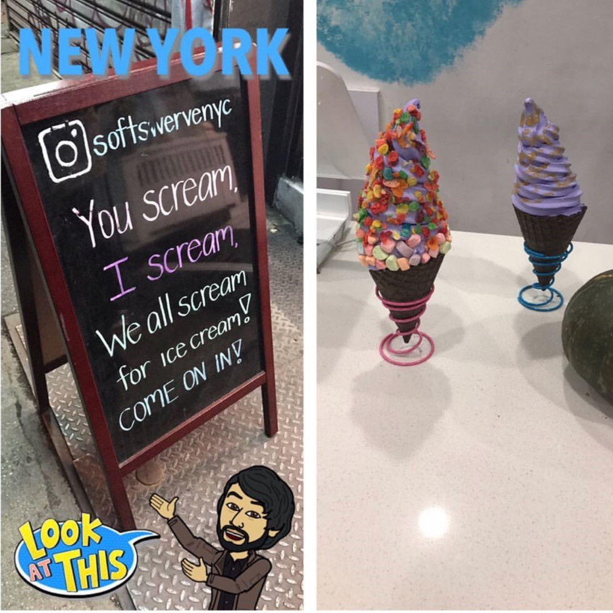
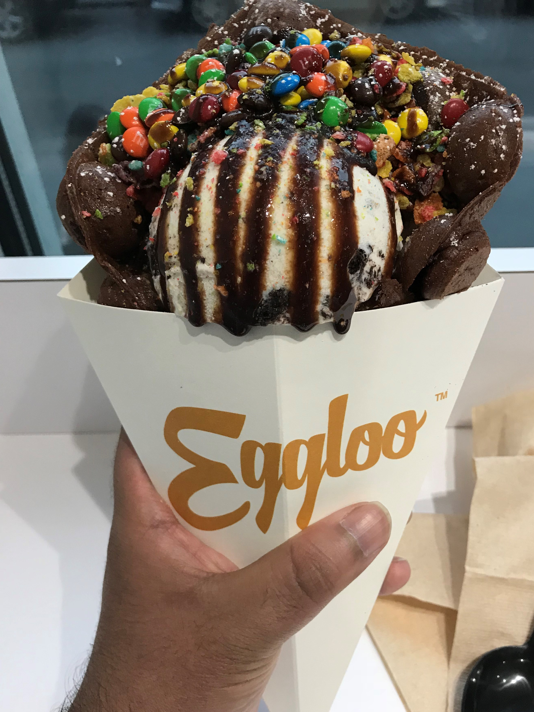

Taiyaki:
Taiyaki:Welcome to my endeavors of ice cream in New York City. Check out some of the places I have visited and recommended flavors.
Soft Swerve:
85B Allen St, New York, NY, 10002
Soft Swerve Ice Cream was the first ice cream spot I visited when I began my journey as a foodie. They have 4 flavors which are: Ube Purple Yam, Almond Cookie, Matcha Green Tea and Black Sesame. You can choose from various toppings and two cone flavors. They have customized specials in their menu with set swirl flavor, cone and toppings. My recommended and favorite swirl flavor is Ube Purple Yam.
 Eggloo:
60 Mulberry St, New York, NY 10013
Eggloo is the second ice cream spot I have visited and I have been here multiple times. They specialize in Hong Kong egg waffles of three flavors which are Original, Chocolate and Green Tea. You have an option of either a soft swerve or scoops of various ice cream flavors inside the egg waffle. On top of that they give you choices for toppings and drizzles. The egg waffle absorbs the flavors of toppings, drizzles and ice cream itself and the waffle at the end tastes amazing. They do have other options available as well.
Taiyaki:
119 Baxter St, New York, NY 10013
Taiyaki Ice Cream is most famous for their fish shaped cone. It is not just simply a cone but it has magic inside of it. When I visited their Baxter St location, I had the unicorn. The image to your right is how it looks. They have many other flavors of soft swerve that I have yet to try. In Addition, beverages with a unicorn floatie are also their specialty. They have expanded and opened up two location in New York City, one in Florida and one in Toronto, Canada.
 Milk and Cream Cereal Bar:
Milk and Cream Cereal Bar:
159 Mott St, New York, NY 10013
Milk And Cream Cereal Bar is one of my favorite spot. As the name suggests they are heavy on cereals. You have an option of ice cream swirl, ice cream and cereal mixed milkshake, and a cereal bowl. You'll be confused as to which toppings and flavors should you pick just like I was. For our convinience, they have signature combos which has customized flavors and toppings. The image to your right is Cookie Crisp Carnival. That's what I tried on my last trip there. For Customers they also have pints available. Their environment is very appealing as well. Make sure to check out this place when you are in China Town or SoHo.
 Bar Pa Tea:
Bar Pa Tea:
 Sprinkles Land:
Sprinkles Land:
Unfornately, They have closed down. Hopefully they come back soon.
Sprinkles Land is also one of my favorite place to go to. Their signature soft-serve ice cream include Tiramisu Lover made with real mascarpone cheese, Your Honey served with honeycomb and a syringe of pure honey, Green Garden green tea ice cream with layers of melted cheese, and Rainbow Castle a multi color creation. The image to your right is Rainbow Castle which had cotton candy in it.
 C Tea NYC:
C Tea NYC:
52 Kenmare St, New York, NY 10012
Although C Tea isn't an ice cream place but their milkshakes are just as good. They are more famous for their teas. From a wide variety of tea flavors they serve Milk Foam Tea, Truffle Milk Foam Tea, their iconic city thmese City C Tea, Fresh Fruit tea, Pure C Tea, Classic Milk C Tea, Latte Tea, and they also bake treats. The image to your right is New York C Tea Green Apple Milkshake.
 Stuffed Ice Cream:
Stuffed Ice Cream:
139 1st Avenue, New York, NY 10003
Stuffed Ice Cream serves bouquests of ice cream. A boquets of ice cream include multi flavored scoops of ice cream. The image to your right is the panda that they served me.They are known for serving cruff which by definition is a perfectly toasted, glazed donut stuffed with your favorite ice cream flavor and topping of choice. They also serve ice cream cakes as well. If you are in the East Village, make sure to stuff yourself with Stuffed Ice Cream.
 Magnum:
Magnum:
132 Spring Street, New York, NY 10012
Magnum opens seasonally from June to End of August. When I moved back to United States from Pakistan, i looked for Magnum in stores and I could not find it. I was surprised they don't have a location here. Thankfully, i found last year a pop up location they had in New York City. Magnum customizes Ice Cream bar of your choosing in front of you. I have seen people lined up outisde just for their ice cream bar. Out of all the ice cream locations I have visited this place had lowest price.
 Blue Stripes Cacao:
Blue Stripes Cacao:
28 E 13th St, New York, NY 10003
Blue Stripes Cacao is not an ice cream place, but it is a chocolate paradise. If you like chocolate like I do, You'll love this this place. This image to your right is called cake and shake. The cake is on top which is supported by Bretagne biscuit and chocolate shake underneath. This place serves a unique dessert called chocolate pizza. Also, their chocolate shots are most famous. It also offers a collection of books too. It is 2 blocks away from 14th St Union Square Station.
 Malai Ice Cream
Malai Ice Cream
268 Smith St, Brooklyn, NY 11231
The name sparked my interested to visit this location as Malai in Urdu means "Cream". As I thought this place is established a desi woman. The ice creams itself had a unique flavoring to it. Ice cream flavors here are robustly flavored using some of the spices like ginger, nutmeg, cardamon, and saffron. It may sound odd but its taste was amazing. I purchased two flavors Mango and Cream and Turkish Coffee. I have also tried Rose with Cinnamon Roasted Almonds. They are newly place so feel make check it out.
 Van Leeuwen Ice Cream
Van Leeuwen Ice Cream
81 Bergen St, Brooklyn, NY 11201